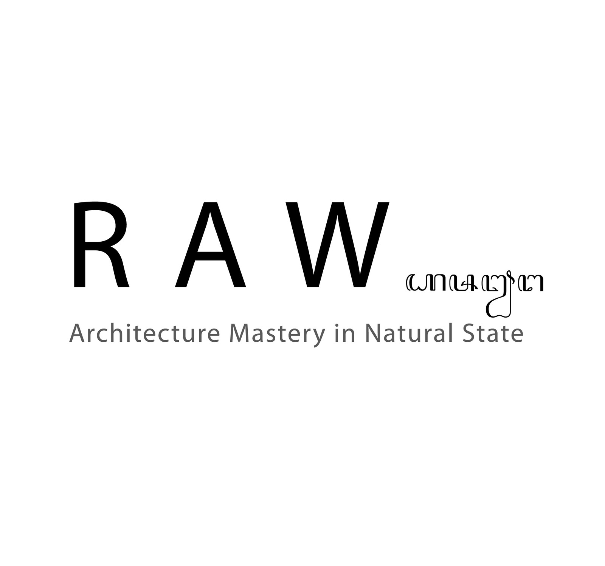
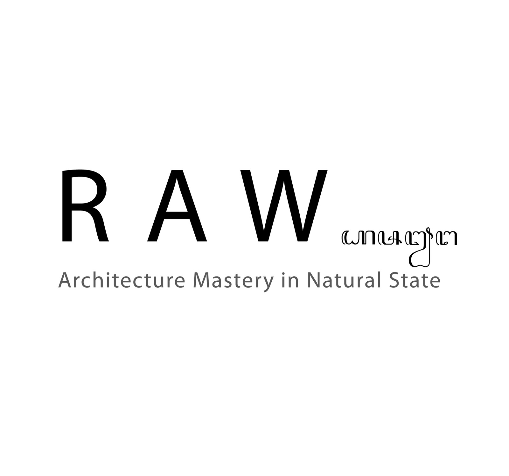

Our Service
Konsultasi karir :
Layanan ini membantu individu dalam merencanakan dan mengembangkan karir mereka melalui bimbingan profesional dan penilaian keterampilan.
Kerjasama Industri :
Govokasi bekerja sama dengan berbagai perusahaan dan industri untuk menciptakan program pelatihan yang relevan dan sesuai dengan kebutuhan pasar tenaga kerja.
Program Magang dan Penempatan Kerja :
Layanan ini membantu peserta untuk mendapatkan pengalaman kerja praktis melalui program magang dan penempatan kerja di perusahaan-perusahaan mitra.
Event dan Seminar :
Govokasi menyelenggarakan berbagai event, seminar, dan workshop yang bertujuan untuk memperluas wawasan dan jaringan profesional peserta.


 
